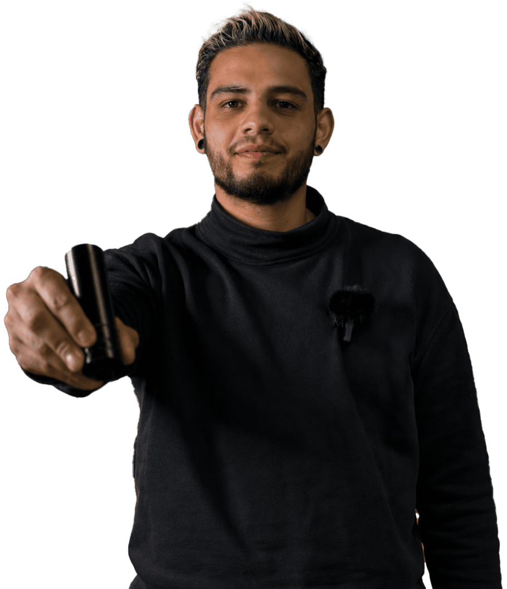
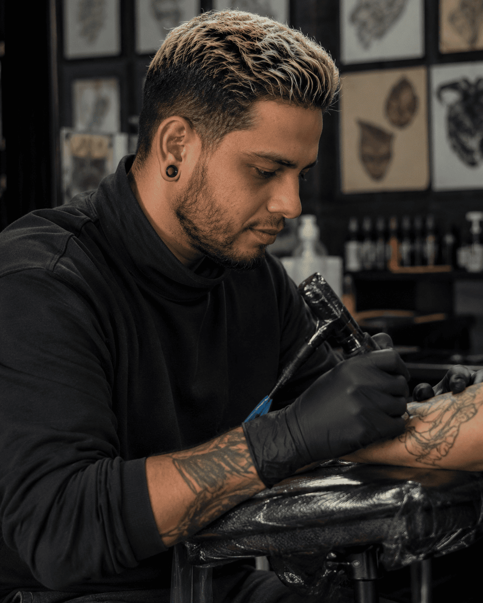

Tatuador en Elche
Brian Tattoo
Realismo black and gray Blackwork, sombra y piezas pensadas para la piel.

Portafolio
Portfolio en piel: sombra, linea y detalle.



Quien es BrianTattoo
Realismo, sombra y una pieza pensada para tu piel.
Soy Brian, tatuador con 8 años de experiencia especializado en realismo, blackwork y sombras. He desarrollado piezas reconocidas por su nivel de detalle, contraste y durabilidad, consolidando un estilo propio que mezcla tecnica y creatividad.
Trabajo con clientes locales e internacionales para crear tatuajes personalizados con una historia clara. Mi enfoque es la precision, la higiene y la excelencia artistica en cada sesion.
Descubre el portafolio completoGaleria
Detalle, piel y proceso real.
Una seleccion visual del estilo de BrianTattoo: contraste, linea, sombra y sesiones trabajadas con calma.

Where to find him
BrianTattoo trabaja en Elche.
Atencion con cita previa para estudiar cada idea con el tiempo que merece. Si vienes con referencias, zona del cuerpo y tamaño aproximado, la reserva avanza mucho mas rapido.

Reservas
Reserva por WhatsApp
Cuenta tu idea en pocas lineas y abre el chat directo con BrianTattoo.